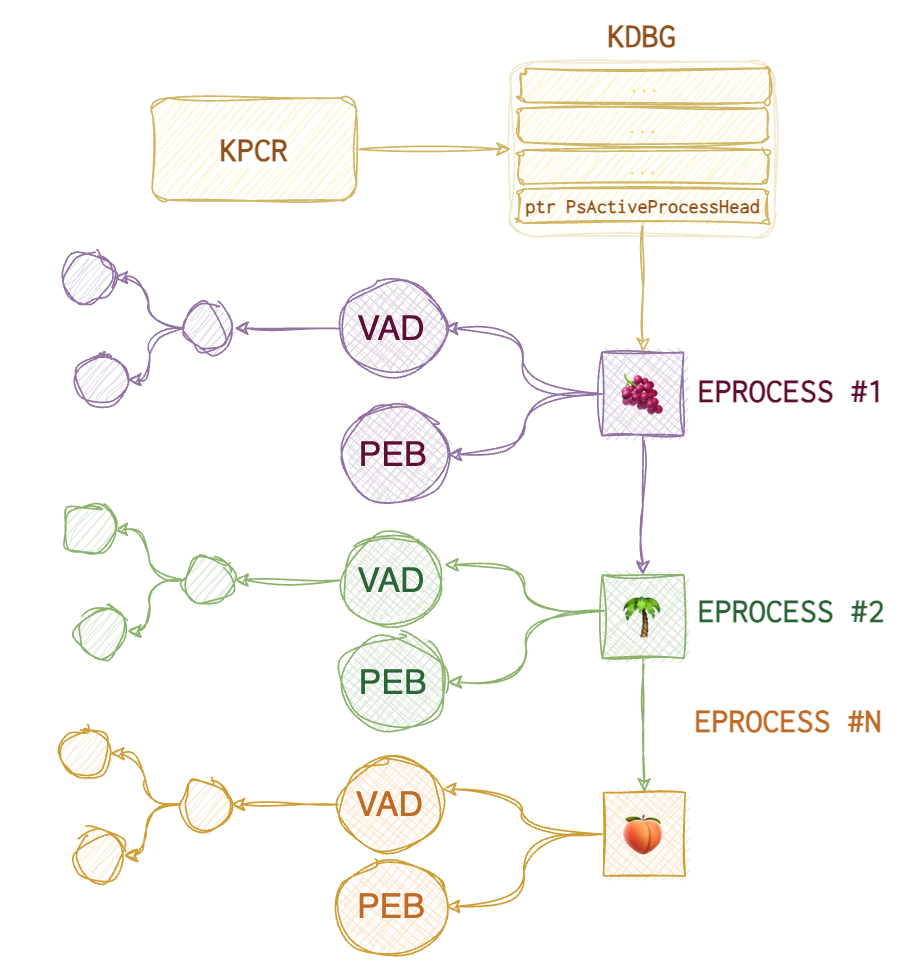

*Memory is the best evidence, although the hardest to preserve. If you recall Frozen II, “Water has memory” - same story. Even if you delete all the evidence, memory silently remembers all that. But it’s so fragile…
KPCR - (Kernel) Processor Control Region. It points to a KDBG, Kernel Debugging Data Block, a structure maintained by the Windows kernel for debugging purposes. KPCR’s offset is fixed on Windows XP but differs in later versions. There are two ways to find KDBG: scan for its signature or find the KPCR and then follow the offset specified. Why do we even need this KDBG? It has a pointer PsActiveProcessHead which points to the list of processes (called EPROCESS) with all the information about those dudes.

Each EPROCESS has two essential structures: PEB (Process Environment Block) and VAD (Virtual Address Descriptors). PEB contains 🐾 path to the executable, 🐾 command line that spawned the process, 🐾 linked list of DLLs used. VAD is a balanced tree structure that keeps track of all pages allocated for this process (virtual addresses).
PEB contains several doubly-linked lists that can be helpful when spotting hiding malware:
🐾 InLoadOrderModule list (InLoad) - doubly-linked list
🐾 InInitializationOrderModule list (InInit) - doubly-linked list
🐾 InMemoryOrderModule list (InMem) - doubly-linked list
Collection
Why even bother collecting RAM?
- User Activity –> File usage and knowledge. Prove someone did something or used something. Common artefacts: Prefetch, ShimCache, Web browser, $MFT (master file table).
- Encryption –> Key files and passwords. Standard tools:
hashcat,passware. - Host compromise –> Processes, network activity, malware, rootkits, persistence.
…force a crash and subsequently produce a memory dump as a mechanism for collecting volatile data. Sheward, Mike. Hands-on Incident Response and Digital Forensics (p. 165). BCS Learning & Development Limited. Kindle Edition.
📘 dd if=\\.\PhysicalMemory of=memory.img conv=noerror # requires elevated privileges.
# ‘\\.\PhysicalMemory’; a second device, ‘\\.\DebugMemory’
❗️ All loaded device drivers on modern systems must be digitally signed. ❗️To be loaded on servers, drivers now must pass the Windows Hardware Quality Labs certification. The forensic workaround is not yet clear.
Live
🐾 RAM image (bit-by-bit copy of RAM). It can be acquired for all PC, there are certain complications with a Mac. Also, you can collect RAM data for mobile devices for separate processes only. Virtual machines are usually stored in a separate file once the system is suspended. 🐾 Network connections, ARP cache 🐾 Process tree
🛠️ WinPMEM, 🛠️ DumpIt, 🛠️ F-Response and SIFT, 🛠️ Belkasoft Live RAM Capturer, 🛠️ MagnetForensics Ram Capture
Dead
🐾 Hibernation files. Exist on major OS (Windows, Mac, Linux). For Windows - hyberfil.sys. It’s a RAM capture made by OS when the PC falls asleep 💤. 📂 %SystemDrive%\hyberfil.sys
🐾 Page files. 📂 %SystemDrive%\pagefile.sys. Partial RAM.
🐾 Swap files. 📂 %SystemDrive%\swapfile.sys (Win8+ and 2012+). Partial RAM, suspended modern applications swapped to disk.
🐾 Crash dumps. 📂 %WINDIR%\MEMORY.DMP, it’s a full RAM copy.
🛠 Belkasoft RAM Capturer. ~4Mb footprint in RAM, slow. Magnet RAM Capturer - huge footprint, fast. Dumpit - the fastest, the smallest footprint (didn’t work on Win10 on a VM Parallels on macOS). All of the aforementioned tools run in kernel mode! FTK Imager - big footprint, user mode, doesn’t work on VM (in my case). Benchmark the tools yourself from time to time. Redline, Fast Dump (
fdpro.exe). Sumuri’s Interception (included with Paladin). Exploits some memory bug on some OS for machines that have either Thunderbolt or a Firewire to overwrite the admin’s password in memory.
Malfind. https://www.linkedin.com/pulse/process-injection-detection-malfind-britton-manahan/
Determine the correct profile (Vol2)
Volatility 3 deduces the profile itself. With vol2, you need to do that manually. Two plugins are available for that: kdbgscan and imageinfo.
✍️ A useful note, use 📘
export VOLATILITY_LOCATIONand 📘export VOLATILITY_PROFILEso that you won’t have to specify--profileand-foptions every time.
kdbgscan is very slow since it has to scan the image to find the KDBG. The latest OS versions encrypt KDBG; thus, volatility needs to find KdCopyDataBlock to decrypt it, making it work even slower. So, once you get the offset (virtual offset of KDBG on Vista- and KdCopyDataBlock on Win8+), use -g or --kdbg option with other plugins to speed up the analysis since some modules will try to find this structure on their own (pslist, for instance).
kdbgscan will spill out several possible guesses, and you must choose the right one. Of course, it helps if you know the OS and the patch version and can explicitly provide it. But when it’s not an option, try several options to see which one yields any good-looking results (Kernal Base Matches MZ set to True, PsActiveProcessHead and PsLoadedModuleList showing the reasonable number for a live system, KPCR address is provided).
imagescan can give you additional info that’s useful for the investigation: 🐾 capture time (system time) and DTB (directory table base).
How to determine if the profile is correct?
Convert To Raw
Several other formats can contain RAM residues: crash dumps, hibernation and swap files, virtual machine RAM, and live firewire sessions. To normalise the data so that volatility can feast on it, use imagecopy plugin.
hyperfil.sys
📂 %SystemDrive%\hiberfil.sys
Compressed RAM dump at the moment of hibernation. On Win8+ - new format and greater frequency.
❗️Doesn’t work on VMs.
On Win8+ the file is zeroed out (leaving only 4K at the beginning), hence the new artefact is smaller. Also, Fast Startup is now taking over, which means it logs the user out before creating a hibernation file. Hence, the file is even smaller.
📘 powercfg.exe # to see the hibernation settings
📘 powercfg.exe /hibernate on # turn hibernation on
Decompression tools 🛠️: Volatility, imagecopy, hibr2bin.exe, Hibernation Recon.
Analysis tools 🛠️: BulkExtractor, Magnet AXIOM, Volatility, Passware.
Structure:
| Field | Content |
|---|---|
| Header | PO_MEMORY_IMAGE structure |
| Page list | An array of physical page |
| Processor State | CONTEXT + KSPECIAL_REGISTERS |
| Memory Range Array n | Header: NextTable page, Number of entries. Entries: Destination page + Checksum. |
| Xpress compressed block p | Magic \x81\x81xpress (>Win2K). Compressed data |
| Xpress compressed block p+1 | |
| Memory Range Array n+1 | |
Win8+ - new file format.
Not as common, but just as good. imagecopy plugin converts different formats into raw format to speed up. Hiberfile - compressed. Determine the OS profile and run the plugin.
vol.py -f crash.dmp --profile=Win7SP2x64 imagecopy -O crash2mem.raw
vol.py -f hyberfil.sys --profile=Win7SP2x64 imagecopy -O hibir2mem.raw
C:\hiberfil.sys
C:\Memory.dmp
What is hyberfil.sys. Two types of compression.
imageinfo - to identify the profile for memory image. Running vol.py imageinfo -f hiberfil.sys is slow and inefficient. No profiles were sugested. But when we have a live capture of a system, we can use this dump to determine the profile to perfom actions with the right profile on hyberfil.sys.
pagefile.sys
📂 %SystemDrive%\pagefile.sys
When Windows system runs out of RAM, it uses HDD space to temporarily store the data from RAM. To acquire it from a live system: use https://ericzimmerman.github.io/#!index.md or FTK Imager. Get separate files using PhotoRec or using a Hex redactor (for example, 101 Editor). This file is deleted on reboot.
Properties:
| Hidden | True | Owner SID | S-1-5-32-544 |
|---|---|---|---|
| System | True | Owner Name | Администраторы |
| Read Only | False | Group SID | S-1-5-18 |
| Archive | True | Group Name | SYSTEM |
To copy this file use RawCopy64.exe /FileNamePath:c:\pagefile.sys.
To parse this file:
strings pagefile.sys | egrep "^https?://" # show URLs found in memory
strings pagefile.sys | grep -i "^[a-z]:\\\\" # file paths used are shown
strings pagefile.sys | grep -i "^[a-zA-Z09_]*=.*" # env vars
Apply yarn rules against pagefile.
swapfile.sys
📂 %SystemDrive%\swapfile.sys
VMEM
📘 python3 vol.py -f 1.vmem windows.vadinfo.VadInfo # to view Virtual Address Descriptors ([VAD](https://resources.infosecinstitute.com/topic/finding-enumerating-processes-within-memory-part-2/)).
VirtualBox
When the VM is suspended, NOT full memory dump is saved. So, it’s tricky to parse and analyse it. Either collect RAM from within the VM itself or use volatility for some formats.
🐾 .sav - partial memory image
📂 .VirtualBox/Machines/vmname/Snapshots
VMware
❗️ Uses a more complex format that needs prior parsing, ESX.
Each snapshot has a separate .vmem file. These are not raw memory dumps but contain everything that was in RAM then.
🐾 .vmem - ram memory
🐾 .vmss - VMware saved state
🐾 .vmsn - VMware snapshot
📂 C:\XXX\My Virtual Machines\vmname (VMware workstation)
📂 dcname\dsname\dirname\vmname\ (ESX)
Hyper-V
❗️ Uses a more complex format that needs prior parsing, Hyper-V.
🐾 .bin - memory image, .vsv - save state.
📂 C:\XXX\vmname\Virtual Machines\GUID
Analysis
First, you need to understand that data in RAM is not scattered willy-nilly. Weren’t that the case, we would eventually find ourselves up a creek without a paddle.
Get the Profile Info (vol2)
imagecopy plugin is used to convert some file types into raw format. It decreases the time, needed to analyse the file. How to get the correct profile since imageinfo gives you several options and kdbscan gives even more? Below is the output from imageinfo. The purple square shows the service pack version and the green one - the correct profile with the correct service pack. The other two suggested profiles have some service pack versions appended to the end.

Then validate the file by listing processes that were run:
📘 vol.py -f hiberfil.raw pslist --profile=Win7SP0x86
If the output makes sense (like the one one in the picture below), the profile is correct.

Convert to raw
hiberfil files are not as common, but just as good. imagecopy plugin converts different formats into raw format to speed up. Also saves up to 75% of memory size, therefore decreasing the time for analysis. First, determine the OS profile (for vol2) and run the plugin.
📘 vol.py -f hiberfil.sys --profile=Win7SP0x86 imagecopy -O hyber.raw
📘 vol.py -f crash.dmp --profile=Win7SP2x64 imagecopy -O crash2mem.raw
📘 vol.py -f hyberfil.sys --profile=Win7SP2x64 imagecopy -O hibir2mem.raw
Running
vol.py imageinfo -f hiberfil.sys, for example, is slow and inefficient. No profiles were suggested. But when we have a live system capture, we can use this dump to determine the profile to perform actions with the right profile onhyberfil.sys.
Compression
Win8.1+ is now compressing some memory regions.
🛠️ winmem_decompress.py. The output can’t be analysed with volatility, it’s slow. 🛠️ win10memcompression.py